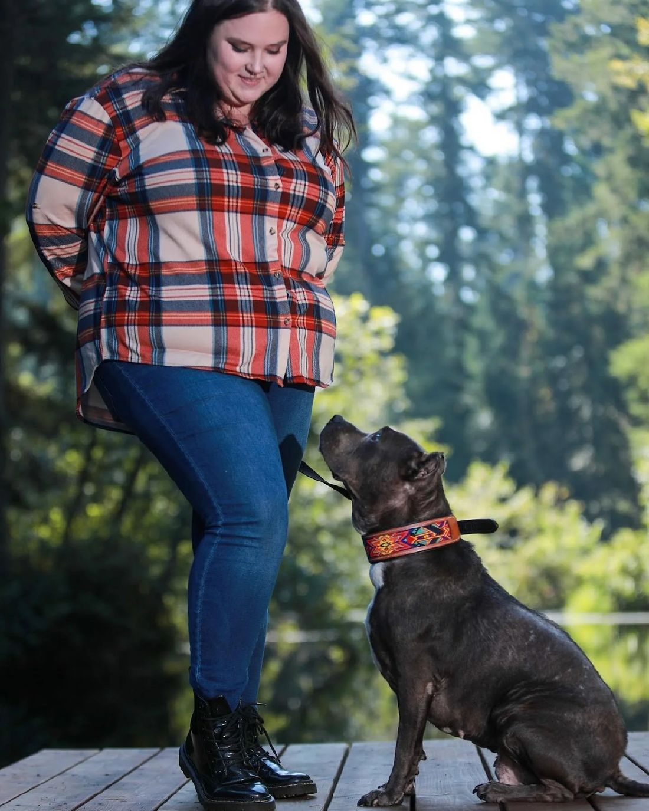
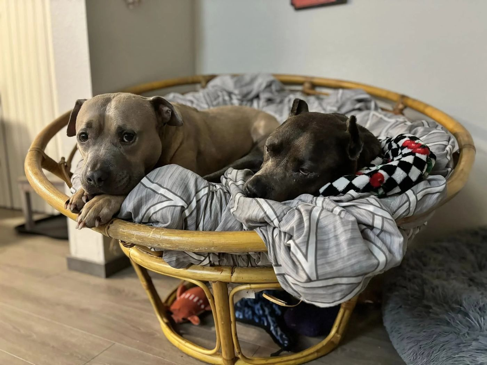
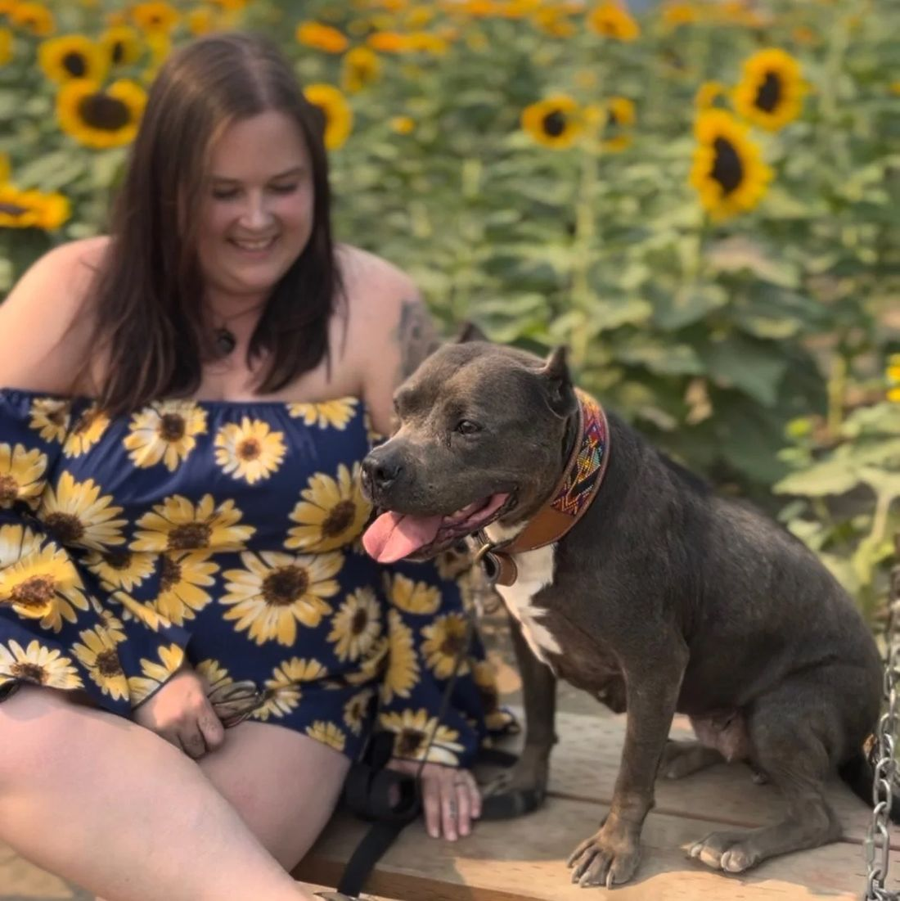

Hello, I'm Alora Tawoosi
Owner and operator of Woofs of Wisdom Dog Training. As someone who was raised part of a 15+ dog pack family, I learned to speak “dog” pretty early.

Communication is the whole program
Growing up with a pack that big, communication is what kept the household running. I built my whole training program around those skills, so you learn not only how to communicate with your dog, but why it works.
I use a combination of balanced training methods and techniques to strengthen the human-animal bond.
Dogs run in the family. My mom has owned and operated her own grooming studio, Bark ’n Bubbles in Leesburg, VA, for 15 years. Together we did a lot of rescue work, fostering hundreds of dogs of every breed, and at one point we had 14 dogs in our house.
That set the stage for earning my certification as a dog trainer through Animal Behavior College.

Athena, the reason for it all
Athena was an American Staffordshire Terrier with the sweetest eyes you'd ever see. I rescued her from a bad breeding situation, and earning her trust took time. Once I did, we were inseparable. She gave me purpose in my early 20s and became my best friend.
In August 2023, Athena was diagnosed with stage 3 lymphoma. We tried everything, from chemotherapy to holistic remedies, and made her a bucket list to enjoy while she could. She passed on October 16, 2023.
Losing her was the beginning of what is now Woofs of Wisdom Dog Training.
In Greek mythology, Athena was the goddess of wisdom. Wisdom, logic and rationality are the values the business is built on, and it's dedicated to her.

Our mission
To give owners the knowledge and wisdom to understand their dogs, and build relationships based on mutual respect and trust.
What's next for Alora
Downtime with her pack: Hermes, her husband Ali and their new puppy, Cleopatra.
Studying to become a professionally certified service dog trainer, and studying canine nutrition.
Plans for her own dog food company with training treats, and to provide service dogs to retired service members.
What people are saying
“We've worked with Alora since our lab was 5 months old. Leia absolutely loves Alora and her visits. Having sessions in home has really helped us work on specific behaviors and obedience goals. Alora is so knowledgeable and has given us insight and perspective into our pup's behavior along with the tools to help us teach her.”
“Caliber has had 4 training sessions so far and he loves Alora! He has come a long way. We appreciate all the advice and tips she has shown us so far. Alora has been very flexible and understanding with where to train and what is important to Caliber and his family.”
“We've recently started private training classes with Alora that have made a big difference in Roman's reactive behavior. She not only supports me with solutions in redirecting Roman but also reaffirms to me that I'm doing the right thing and we're making progress.”
Start with a free phone consult
Tell Alora about your dog, your goals and what's been hard. Your first call is the only time you won't know your next step. After it, you'll have a training plan and a schedule.
- Phone
- (703) 853-9440
- Alora@
WoofsofWisdomDogTraining.com - Hours
- Monday to Saturday, 10 am to 4 pm
Closed Sundays
Serving Northern Virginia, including Reston, Herndon, Fairfax, Sterling, South Riding, Ashburn, Leesburg, Alexandria and more.